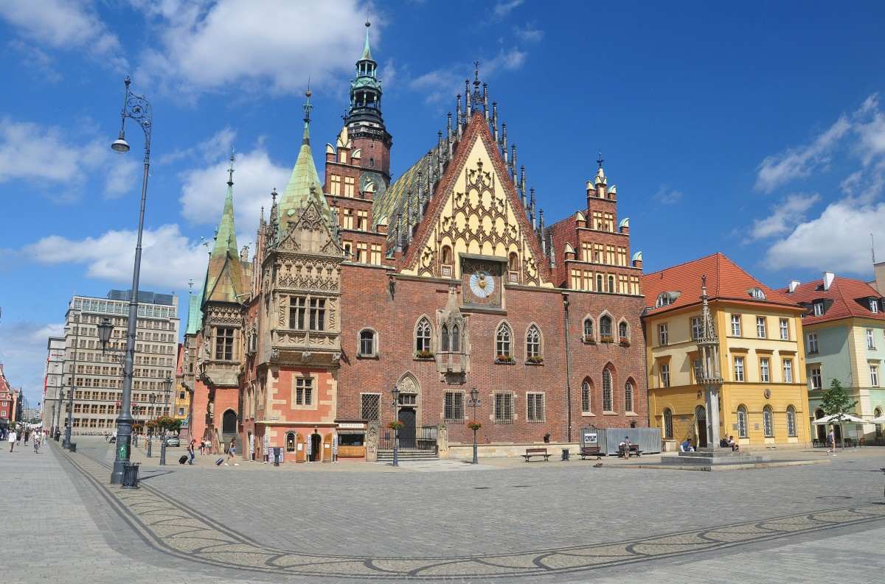
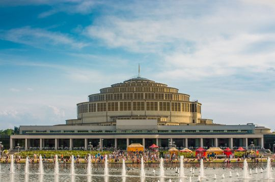
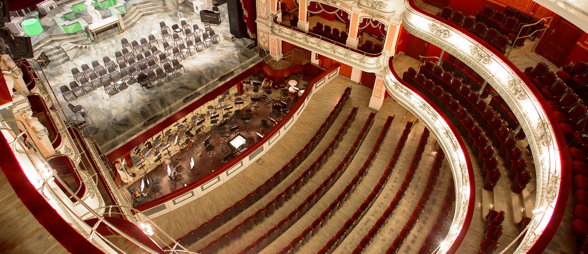

Podstawowe informacje
Wrocław - miasto na prawach powiatu w południowo-zachodniej Polsce, siedziba władz województwa
dolnośląskiego
i powiatu wrocławskiego. Położone w Europie Środkowej, na Nizinie Śląskiej, nad Odrą i czterema jej dopływami.
Jest historyczną stolicą Dolnego Śląska, a także całego Śląska.
Jest głównym miastem aglomeracji wrocławskiej, a także największym miastem leżącym na Ziemiach Odzyskanych.
Trzecie pod względem liczby ludności miasto w Polsce oficjalnie 672 929 mieszkańców, piąte pod względem
powierzchni 292,82 km². Z wyliczeń MPWiK i policji wynika, że rzeczywista liczba ludności Wrocławia wynosi od
825 tysięcy do 1 miliona osób. Wrocław jest centrum rosnącej aglomeracji wrocławskiej, którą zamieszkuje
szacunkowo 1,25 mln osób.
Zabytki i atrakcje Wrocławia:
Informacje o Wrocławiu:
| Informacja |
Wartość |
|
Ludność Wrocławia w 2019 roku
|
| Mężczyźni |
Kobiety |
| 294,3 tyś |
335,9 tyś |
| Ogółem: 630,2 tyś |
|
|
Powierzchnia
|
327,5 km²
|
|
Gęstość zaludnienia
|
1 950 osób/km²
|
|
Liczba gmin
|
23
|
|
Liczba dzielnic
|
6
|
|
Liczba osiedli
|
20
|
|
Liczba ulic
|
1 200
|
|
Komunikacja miejska
|
26 linii tramwajowych
|
|
152 linie autobusowe
|
|
Źródło danych: GUS
|

|
Najpolularniejsze Wrocławskie zabytki:
Ratusz i Stare Miasto

Hala Stulecia

Opera Wrocławska

Powrót na stronę główną